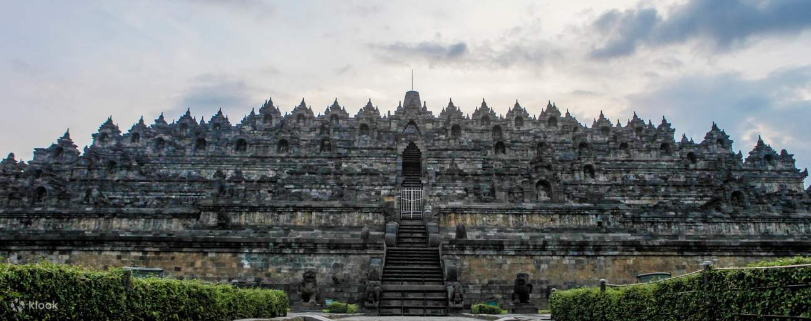

CANDI BOROBUDUR
Candi Borobudur (Jawa: ꦕꦟ꧀ꦝꦶꦧꦫꦧꦸꦝꦸꦂ, translit. Candhi Båråbudhur) adalah sebuah candi Buddha yang terletak di Borobudur, Magelang, Jawa Tengah, Indonesia. Candi ini terletak kurang lebih 100 km di sebelah barat daya Semarang, 86 km di sebelah barat Surakarta, dan 40 km di sebelah barat laut Yogyakarta. Candi dengan banyak stupa ini didirikan oleh para penganut agama Buddha Mahayana sekitar tahun 800-an Masehi pada masa pemerintahan wangsa Syailendra. Borobudur adalah candi atau kuil Buddha terbesar di dunia,[1][2] sekaligus salah satu monumen Buddha terbesar di dunia.[3]
Monumen ini terdiri atas enam teras berbentuk bujur sangkar yang di atasnya terdapat tiga pelataran melingkar, pada dindingnya dihiasi dengan 2.672 panel relief dan aslinya terdapat 504 arca Buddha.[4] Borobudur memiliki koleksi relief Buddha terlengkap dan terbanyak di dunia.[3] Stupa utama terbesar teletak di tengah sekaligus memahkotai bangunan ini, dikelilingi oleh tiga barisan melingkar 72 stupa berlubang yang di dalamnya terdapat arca Buddha tengah duduk bersila dalam posisi teratai sempurna dengan mudra (sikap tangan) Dharmachakra mudra (memutar roda dharma).
Monumen ini merupakan model alam semesta dan dibangun sebagai tempat suci untuk memuliakan Buddha sekaligus berfungsi sebagai tempat ziarah untuk menuntun umat manusia beralih dari alam nafsu duniawi menuju pencerahan dan kebijaksanaan sesuai ajaran Buddha.[5] Para peziarah masuk melalui sisi timur dan memulai ritual di dasar candi dengan berjalan melingkari bangunan suci ini searah jarum jam, sambil terus naik ke undakan berikutnya melalui tiga tingkatan ranah dalam kosmologi Buddha. Ketiga tingkatan itu adalah Kāmadhātu (ranah hawa nafsu), Rupadhatu (ranah berwujud), dan Arupadhatu (ranah tak berwujud). Dalam perjalanannya para peziarah berjalan melalui serangkaian lorong dan tangga dengan menyaksikan tak kurang dari 1.460 panel relief indah yang terukir pada dinding dan pagar langkan.
Menurut bukti-bukti sejarah, Borobudur ditinggalkan pada abad ke-10 seiring dipindahnya pusat Kerajaan Mataram Kuno ke Jawa Timur oleh Pu Sindok.[6] Dunia mulai menyadari keberadaan bangunan ini sejak ditemukan 1814 oleh Sir Thomas Stamford Raffles, yang saat itu menjabat sebagai Gubernur Jenderal Inggris atas Jawa. Sejak saat itu Borobudur telah mengalami serangkaian upaya penyelamatan dan pemugaran (perbaikan kembali). Proyek pemugaran terbesar digelar pada kurun waktu 1975 hingga 1982 atas upaya Pemerintah Republik Indonesia dan UNESCO, kemudian situs bersejarah ini masuk dalam daftar Situs Warisan Dunia.[3]
Borobudur kini masih digunakan sebagai tempat ziarah keagamaan; tiap tahun umat Buddha yang datang dari seluruh Indonesia dan mancanegara berkumpul di Borobudur untuk memperingati Trisuci Waisak. Terkait kepariwisataan, Borobudur adalah objek wisata tunggal di Indonesia yang paling banyak dikunjungi wisatawan.